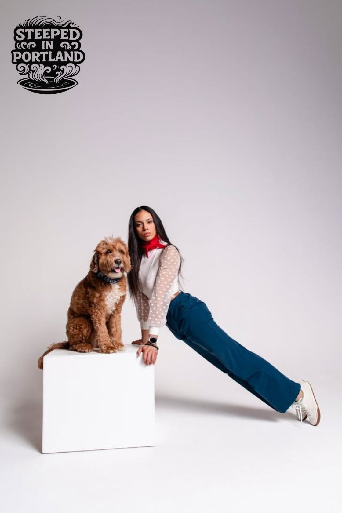

47 min
47 min
Latest conversation · Episode 05
Tom Sollit
Premise to Purpose
A conversation about purpose and the places we create.
Watch episode on YouTubeA video podcast · Portland, Oregon
Pull up a chair. Meet the people, places, and ideas shaping Portland — one conversation at a time.
With host & producer Shaii Flores
The conversations
Start with the latest, or find a guest who sparks your curiosity. Every episode is free to watch on YouTube.
47 min
Latest conversation · Episode 05
Tom Sollit
A conversation about purpose and the places we create.
Watch episode on YouTube 41 min
41 min 42 min
42 minEquity, empowerment & entrepreneurship.
Watch on YouTube 24 min
24 min 31 min
31 minGongfu Cha in Portland, Oregon.
Watch on YouTubeJust a taste?
Watch the 40-second season trailer
Behind the conversations
Steeped in Portland is a video podcast about culture, real estate, evolving luxury, and the stories behind spaces that do more than one thing at a time.
Hosted and produced by Shaii Flores, the series spotlights the people continuing to live, create, and build community in Portland. The guest list keeps growing. So does the conversation.
Come steep with us.
Keep the conversation growing
Know someone with a Portland story worth sharing? Suggest a guest, put your own name forward, or tell us what you’d love to hear about.
Suggest a guest by emailOpens an email draft for you to review and send.
Or write to steepresearch2@gmail.com.